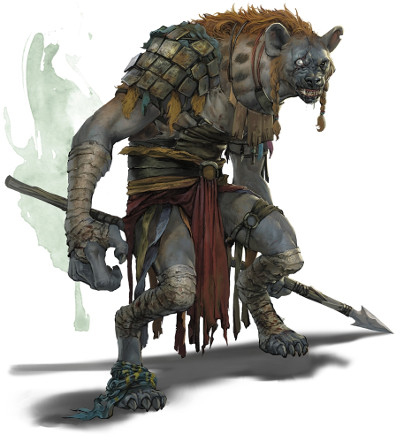
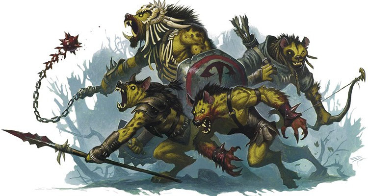
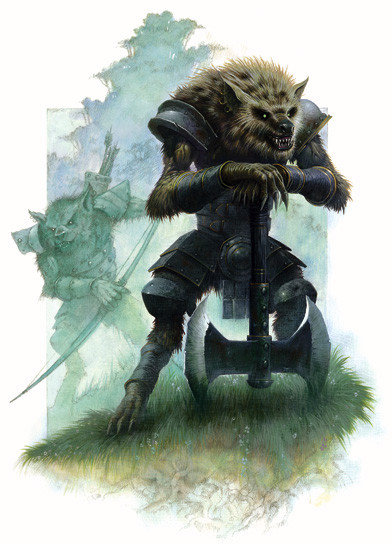

Les gnolls
Les gnolls sont une race vicieuse de hyènes humanoïdes : cruels par nature et haineux envers toute vie, sauf la leur.
Physiologie
Mesurant plus de 2,20 mètres de haut, un gnoll est susceptible d'avoir au moins une tête de plus que le plus grand des guerriers humains et sa force est évidente lorsque l'on voit avec quelle facilité il brandit sa lourde hache d'armes. Leur visage est dur, semblable à celui d'un chien, et entouré d'une grosse crinière qui descend tout le long du dos jusqu'à leur queue constamment en mouvement. Une épaisse fourrure, généralement de couleur jaune sale et qui semble imperméable à la poussière, recouvre le reste de leur corps musculeux. Leur crinière comporte un grand nombre de taches grises ou rouge foncé. Certains groupes de gnolls portent aussi des rayures à la place des taches, ou une fourrure brun foncé au lieu du jaune. Mais ces variations, plutôt que de désigner ces gnolls comme étant différents et donc soumis à des préjugés, sont insignifiantes pour eux.
Parmi les races civilisées, les gnolls ont la réputation d'être très forts et d'avoir une intelligence très faible. Si cela n'est pas faux, les gnolls sont toutefois des créatures très instinctives, capables de se servir de leurs talents naturels pour se tirer d'affaire dans la plupart des situations. Également souvent considérés comme lâches, ce trait n'est par contre pas du tout exact et tout aventurier qui se fierait à un gnoll qui se retourne et fuit après une démonstration de force risque fort de mettre fin à sa carrière prématurément.
Sens aiguisés
Les gnolls sont des créatures principalement nocturnes, mais s'ils n'aiment pas la lumière vive et cherchent à l'éviter, celle-ci ne leur fait aucun mal et ils peuvent la tolérer pendant un combat. Leurs sens, en général, sont plutôt développés et ils utilisent souvent une combinaison de la vue, du son et de l'odorat pour traquer leurs proies. Lorsqu'ils postent des sentinelles autour de leurs repaires, il peut donc être difficile de les prendre par surprise.
Cycle de vie
Gnolls are feral humanoids that attack settlements along the frontiers and borderlands of civilization without warning, slaughtering their victims and devouring their flesh.
Les gnolls femelles ont une période de gestation de quatre mois mais ne mettent au monde qu'un ou deux jeunes par portée généralement. Ceux-ci resteront avec leur mère environ dix-huit mois avant d'entrer dans le groupe. La fourrure épaisse des gnolls adultes ne se développe chez les jeunes que vers l'âge de cinq ou six ans, ce qui les rend particulièrement vulnérables aux infections externes avant cela. Pendant cette période, les jeunes ne quitteront de fait pas le repaire. Ils montreront des signes de maturité vers l'âge de trois ans, mais même en tenant compte de leur taux de croissance incroyable, ils n'atteindront la taille adulte que vers neuf ans. À ce stade, un gnoll est plus que capable de s'occuper de lui-même. L'espérance de vie naturelle d'un gnoll est d'une trentaine d'années, mais de par la brutalité de leur vie, la maladie, la famine et les prédateurs, très peu d'entre eux, en particulier les mâles, atteignent cet âge.
L'instinct gnoll
Un gnoll est une créature instinctive et rusée. Alors qu'un humain préférera faire une pause pour considérer un problème potentiel, pesant les avantages et les inconvénients de ses choix, un gnoll agira immédiatement et sans penser aux conséquences. Et dans la lutte quotidienne pour leur survie que la majorité des gnolls doivent endurer, il est intéressant de noter que ces décisions prises rapidement sont souvent les bonnes.
Selon les normes humaines, les gnolls sont égoïstes, ne s'intéressant qu'à leur propre survie, aux dépens parfois de celle des membres de leur propre groupe. Les gnolls sont en effet capables de se retourner les uns contre les autres s'ils pensent pouvoir ainsi vaincre un ennemi et y gagner quelque chose. Et en même temps, ils sont aussi capables d'établir des alliances avec d'autres races, généralement des humanoïdes comme les ogres ou les hobgobelins. Cependant, ces accords ont tendance à être de courte durée car la simple présence des gnolls est souvent source de conflit et les choses ne font qu'empirer lorsque la nourriture devient rare, compte tenu des goûts des gnolls. Les gnolls détestent le travail manuel s'il n'est pas lié à la chasse ou à la guerre, et ils n'ont aucun concept clair de l'organisation sous quelque forme que ce soit.
Alimentation
Les gnolls sont principalement carnivores, avec une préférence pour les créatures vivantes ou qui viennent juste d'être tuées. De nuit, il est plus facile de les trouver dans leurs zones de chasse que dans leurs repaires. N'importe quelle région sauvage tempérée ou chaude qui possède des troupeaux d'animaux sauvages les attirent, de même que les fermes isolées et les villages. Les routes commerciales fréquentées sont d'excellents lieux d'embuscade pour tout gnoll qui se respecte, surtout si elles se trouvent à bonne distance de la civilisation et qu'elles ne sont pas surveillées par des soldats armés. Quand ils ont faim, les gnolls dévorent à peu près toutes les parties de leurs proies, et on les voit souvent ronger les os de leurs victimes pour y manger la moelle. Leurs mâchoires sont incroyablement fortes, facilement capables de percer les os les plus épais de la plupart des créatures.
Gnolls are dangerous because they strike at random. They emerge from the wilderness, plunder and slaughter, then move elsewhere. They attack like a plague of locusts, pillaging settlements and leaving little behind but razed buildings, gnawed corpses, and befouled land. Gnolls choose easy targets for their raids. Armored warriors holed up in a fortified castle will survive a rampaging gnoll horde unscathed, even as the towns, villages, and farms that surround the castle are ablaze, their people slaughtered and devoured.
Toutefois, de temps en temps, les chasses échouent. Dans ces circonstances, les gnolls mangent pratiquement n'importe quoi : racines, fruits, œufs ne sont pas leur nourriture favorite, mais ils permettent à un gnoll de rester vivant et en forme pour se battre pendant des mois. Les mâles adultes affamés peuvent également en arriver à manger les jeunes présents dans le repaire si les femelles ne les en empêchent pas. Ce cannibalisme est une pratique acceptée en période de vaches maigres chez les gnolls.
Habitat
Les gnolls sont beaucoup moins nombreux que les orcs ou les races gobelinoïdes. Bien que physiquement puissants, la société relativement primitive des gnolls a en effet un lourd impact sur leur nombre. En général, les gnolls préfèrent les zones chaudes ou tempérées, et ils n'hésiteront pas à se déplacer si les conditions environnementales changent. Leur instinct naturel leur permet d'ailleurs souvent de prédire les variations climatiques comme les tempêtes, les inondations ou les sécheresses, voire même les tremblements de terre d'origine naturelle. Les gnolls évitent par contre les déserts et les montagnes, mais n'ont pas de problème à vivre sous terre, tant qu'ils sont assez loins sous la surface pour isoler la meute des conditions difficiles.
L'existence d'une source d'alimentation est l'un des principaux sujets de préoccupation des gnolls, même s'ils peuvent subsister avec pratiquement n'importe quoi. Et tant que la nourriture est présente et facilement accessible, le nombre de gnolls va croître dangereusement. Dans le passé, des croisades ont été lancées pour éliminer toute vie gnoll, mais ces actions militaires sont coûteuses. Certains décident alors plutôt de simplement laisser les gnolls grandirent car, tôt ou tard, les sources de nourriture seront insuffisantes pour soutenir leur nombre et alors, conséquence inévitable, ils commenceront à se battre entre eux.
Repaire
Les repaires gnolls sont presque toujours des terriers ou des complexes de tunnels créés par d'autres créatures comme les ankhegs, les blaireaux géants ou les kobolds. Seules d'extraordinaires circonstances pousseront les gnolls à construire ou à creuser volontairement leurs propres tanières. Quand un groupe de gnolls déménage, pour quelque raison que ce soit, il se met à chercher un terrier ou quelque chose de similaire, et revendique généralement le premier qu'il trouve, qu'il soit ou non encore habité. Seule une trop forte résistance ou un monstre particulièrement puissant les forcera à reconsidérer leur choix.
Une fois installée dans le nouveau repaire, la meute gnoll remplira les tâches quotidiennes comme la chasse, la recherche de nourriture et la reproduction, et rien d'autre ne sera fait pour étendre le repaire de quelque façon que ce soit jusqu'à ce que des esclaves soient capturés. Ces esclaves endurent des vies misérablement courtes, généralement forcés d'étendre le terrier pour faire face à l'agrandissement des familles ou à l'arrivé de nouvelles. Ils sont également souvent utilisés dans la construction de protections en surface, autour des entrées du repaire, afin d'améliorer la défense de la meute. Ces constructions, cependant, sont rarement sophistiquées et peuvent être relativement facilement surmontées. Notez toutefois que, ne voulant pas perdre de temps à rechercher le meilleur terrier possible, les gnolls sont plutôt disposés à accepter d'autres lieux de vie, tant que la nourriture aux abords est abondante.

Société
Gnolls rarely build permanent structures or craft anything of lasting value. They don't make weapons or armor, but scavenge such items from the corpses of their fallen victims, stringing ears, teeth, scalps, and other trophies from their foes onto their patchwork armor.
La société gnoll est structurée autour de deux unités de base : la famille et la meute.
Les familles se composent d'entre quinze et trente gnolls d'âges différents, dont environ la moitié sont des adultes aptes au combat. Ces gnolls sont tous liés d'une manière ou d'une autre, les jeunes descendant des mâles dominants. Les meutes, quelques fois incorrectement appelées tribus, sont simplement des groupes de familles vivant dans le même repaire. Si de nombreuses familles isolées existent de par le monde, la grande majorité des gnolls vivent en meutes qui peuvent compter jusqu'à quinze familles. La structure des meutes est pour le moins désorganisée, seuls les gnolls les plus forts atteignant une sorte de maturité. Le but d'une meute semble en fait n'être que de se nourrir.
Familles
Au sein des familles, un ordre est plus ou moins nettement défini parmi les adultes, avec un mâle dominant. Sous lui, les autres gnolls sont classés selon leur force et leur habileté au combat, des combats entre eux permettant d'établir l'ordre. Une famille n'a aucune loi ou ordre autre que celui que le dominant décide arbitrairement suivant son humeur. Mais n'importe quel gnoll peut en défier un autre pour résoudre un conflit ou obtenir quelque chose. Cela n'est pas considéré comme un « droit » pour les gnolls, cela fait simplement partie de leur lutte quotidienne pour leur survie. Après une attaque réussie contre une patrouille de soldats humains par exemple, chaque gnoll réclamera une quantité variable de butin. Cependant, une fois au repaire, un gnoll peut librement prendre un objet à un autre, et si son propriétaire souhaite en conserver la possession, il doit être prêt à se battre pour cela. De tels combats sont rarement mortels, bien qu'il n'y ait aucun remords si la mort survient. Un gnoll qui est clairement battu se mettra généralement en retrait durant les jours qui suivent. Ce genre de vie chaotique est supervisé par le mal dominant qui peut lui aussi prendre ce qu'il veut à qui il veut au sein de sa famille, avec la différence que peu s'aventureront à le défier pour ne pas se retrouver avec une multitude de cicatrices ou un œil arraché, voire même pour ne pas mettre bêtement sa vie en jeu.
Meutes
Les relations entre différentes familles au sein d'une meute sont semblables à celles entre les individus. Chaque famille a une position définie à l'intérieur de la meute avec les mâles dominants de chaque famille considérés comme leurs chefs. Cependant, les familles ont tendance à être assez indépendantes, à mener leur propre chasse et à se nourrir seules, combinant seulement leur force avec d'autres lorsque cela est nécessaire. Ainsi, il est rare qu'une meute entière agisse ensemble, à moins qu'elle ne soit directement menacée ou que le chef de meute se sente assez fort pour attaquer des cibles plus grandes, comme de petites villes. Les familles vont et viennent à volonté au sein de la meute, car il n'y a pas de serment d'allégeance ou quelque chose de semblable envers le chef de meute. Les familles peuvent se disperser lorsque la nourriture devient rare, en particulier les faibles, car il est probable qu'elles fourniront elles-mêmes le prochain repas pour la meute. Il faut normalement quelques jours et plusieurs combats à une famille pour « s'installer » dans la structure d'une meute, le temps de mesurer sa puissance et que son statut soit connu de tous les gnolls. Il faut par contre beaucoup plus de temps pour que deux meutes fusionnent, car les deux chefs doivent se mettre d'accord, un processus qui ne se passe généralement pas sans une grande effusion de sang.
Les gnolls sont des survivants par nature et il est possible pour les adultes les plus faibles de survivre et de prospérer, malgré la force des autres membres de leur famille. Ces gnolls sont généralement ceux qui sont capables d'éviter la confrontation et de gagner leur place par le vol ou l'assassinat. De telles actions ne sont d'ailleurs pas désapprouvées par la meute car les gnolls considèrent qu'un guerrier qui succombe d'un coup de poignard dans le dos n'était pas vraiment un guerrier. La société gnoll est basée sur la force et la possession ; tout gnoll qui n'a pas la force de conserver ses biens perdra sa place dans la meute et dans sa famille, s'il ne perd pas la vie.
Esclaves
Une meute n'a que peu ou pas le sens des valeurs monétaires et traite les pièces et les pierres précieuses comme de simples babioles, aussi attrayantes soient-elles. Après tout, un gnoll fort peut réclamer tout ce qu'il désire, alors pourquoi acheter ? Par contre, presque tous les gnolls possèdent des armes, des armures et d'autres outils... souvent en très mauvais état. Ils préfèrent les armes lourdes qui ont la capacité d'écraser ou de fendre leurs ennemis, comme les haches. Les armures sont généralement en cuir, avec des plaques de métal de différentes épaisseurs attachées.
Additionnellement à la nourriture et aux armes, les gnolls vont toujours essayer de capturer des esclaves pendant leurs raids, de toutes races, bien que les humains et les orcs soient les plus communs. Tout simplement parce qu'ils détestent le travail physique de toute sorte s'il n'est pas lié à la chasse ou à la mise à mort. Même les mâles dominants et les chefs de meute ne peuvent forcer un autre gnoll à transpirer et à travailler pendant plus de quelques heures. Ainsi, pour qu'une meute puisse accomplir quelque chose au-delà de la simple survie, les esclaves sont une nécessité. Les plus grosses meutes peuvent avoir jusqu'à trente ou quarante esclaves en même temps, qui nécessitent un remplacement constant. Ces esclaves ne sont pas la propriété d'un seul gnoll et n'importe quel adulte peut leur demander d'accomplir n'importe quelle tâche. Plus inquiétant encore, tout gnoll peut les manger, et cela arrive avec une régularité alarmante. Sous-alimentés et surchargés de travail, peu d'esclaves survivent plus d'un mois après avoir été capturés.
Relations
La société gnoll est souvent considérée comme étant menée par une seule chose : la nourriture. Mais ils forment parfois des alliances, généralement avec des ogres et des hobgobelins qu'ils peuvent même aller jusqu'à considérer comme faisant partie intégrante de la meute. Cependant, de telles alliances sont souvent précaires car les gnolls ne s'associent que pour gagner de la nourriture, des armes, ou face à une plus grande menace. Les objectifs sur le long terme sont rapidement oubliés, car les gnolls sont plus préoccupés par le présent ou le futur proche. La principale cause des ruptures de telles alliances est la nourriture, ou plutôt un manque de nourriture. Dès qu'ils auront faim, les gnolls attaqueront n'importe quel allié supposé. Il faut aussi noter ici que les alliances où les gnolls sont majoritaires ne fonctionnent tout simplement pas : tôt ou tard, la minorité finira dans l'estomac des meutes.
Pour des raisons similaires, les gnolls sont de mauvais mercenaires, malgré leur force en combat. Et il est faux de penser que l'on a simplement besoin de bien nourrir les gnolls pour les garder sous contrôle. En effet, peu importe la taille de leur groupe, ils ne seront jamais complètement satisfaits de leur sort, quel qu'il soit. Même bien nourris et avec de bonnes armes, il y aura toujours quelque chose à tenter pour un guerrier gnoll, animé par le désir de posséder une hache appartenant à un autre mercenaire par exemple, ou un instinct basique qui le poussera à partir chasser ou à tuer. Les gnolls, de par leur nature même, génèrent toujours des frictions, même avec ceux qui se battent de leur côté.
Il est malgré cela facile de comprendre pourquoi certains s'évertuent à engager des gnolls dans leurs rangs. Leur force est réputée et ils sont également bon marché, ne nécessitant souvent qu'une armure, des armes et une grande quantité de viande crue en guise de paiement. Mais la plupart des chefs de mercenaires en viennent rapidement à regretter ce choix et à penser que les gnolls ne valent tout simplement pas les ennuis qu'ils causent.
Religion
Les gnolls vénèrent avant tout la force, le pouvoir... et pas grand-chose d'autre. De fait, ils ne sont pas connus pour être une race particulièrement religieuse et leurs prêtres sont extrêmement rares. Par contre, des plus grandes meutes aux plus petites familles, pratiquement tous vénèrent les cycles de la lune. Bien qu'il soit de notoriété publique que la divinité protectrice des gnolls est Yeenoghu, un seigneur-démon, il est moins connu que la culture gnoll dépeint la lune comme la création de celui-ci, il y aurait de cela des millénaires. Cette croyance peut être risible, mais il ne faut pas oublier que les gnolls sont, majoritairement, païens dans leurs croyances.
Ce n'est donc pas un hasard si les deux principales célébrations du calendrier gnolls ont lieu à chaque pleine lune et nouvelle lune, prenant normalement la forme d'énormes et intenses festins, chasses et combats. Personne ne dirige ou ne prépare ces célébrations, ce sont des actions collectives menées par tous les présents et qui sont complètement spontanées.
Bien qu'il n'apparaisse que rarement dans les dessins des gnolls, lorsqu'il est représenté symboliquement, Yeenoghu est représenté comme un grand gnoll. Beaucoup plus commun est son symbole que l'on retrouve sur les boucliers et les murs des palissades : un fléau à trois têtes que le démon est censé porter dans les batailles, chaque tête étant réputée pour avoir un effet particulier et dévastateur sur ses ennemis. La première serait capable de couper la tête d'un ogre d'un seul coup ; la deuxième est imprégnée d'un puissant poison qui peut paralyser n'importe quelle créature vivante ; la dernière est soi-disant magique et charme toute créature qu'elle frôle, la laissant quasiment sans défense face aux coups à venir du seigneur-démon.
Traduit par blueace